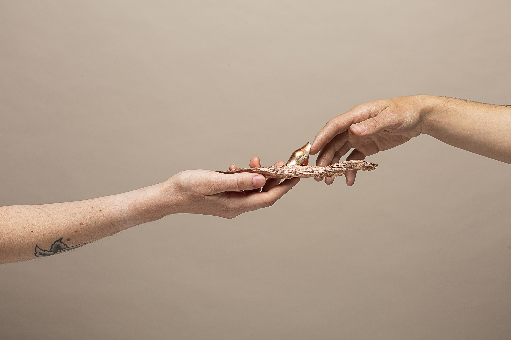
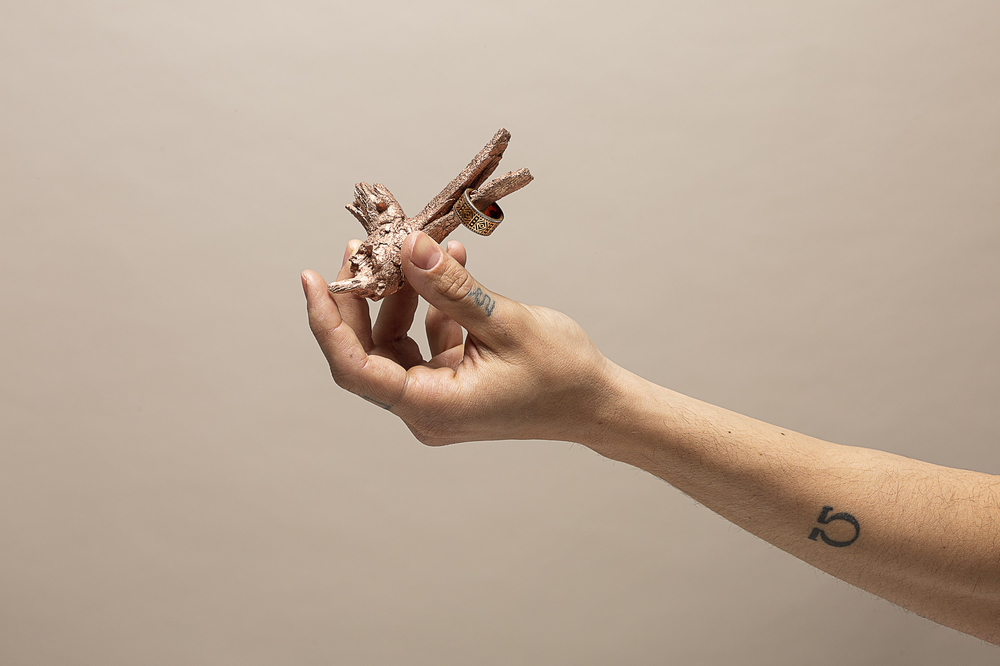
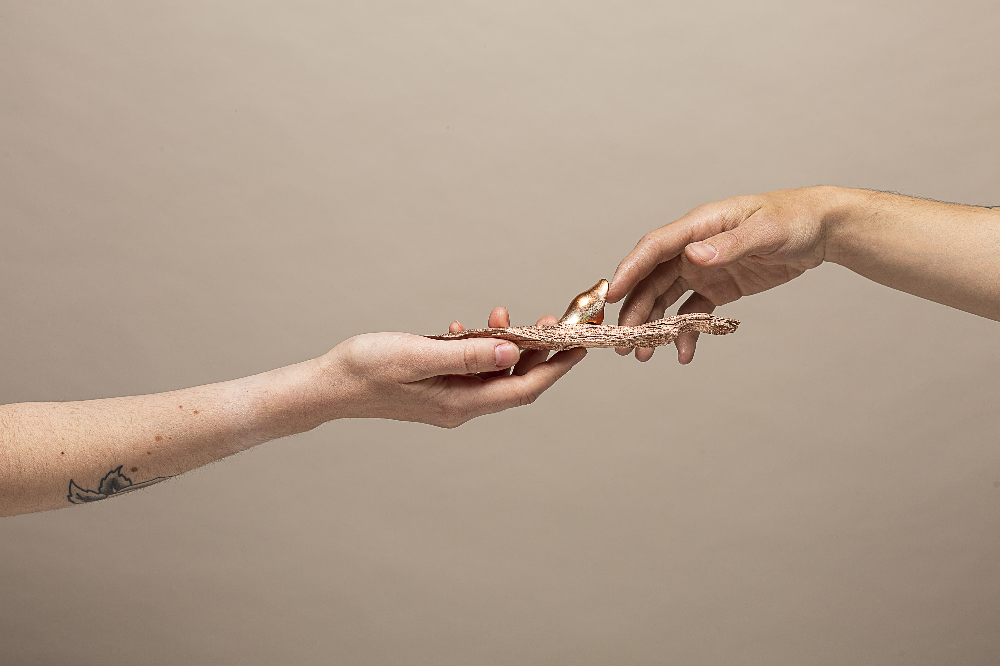
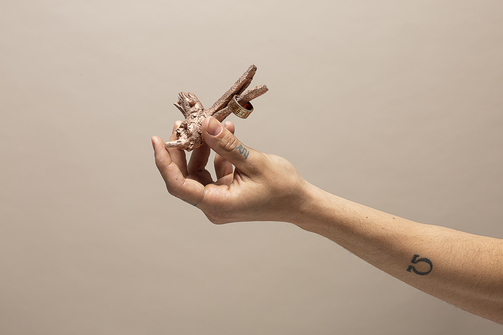
 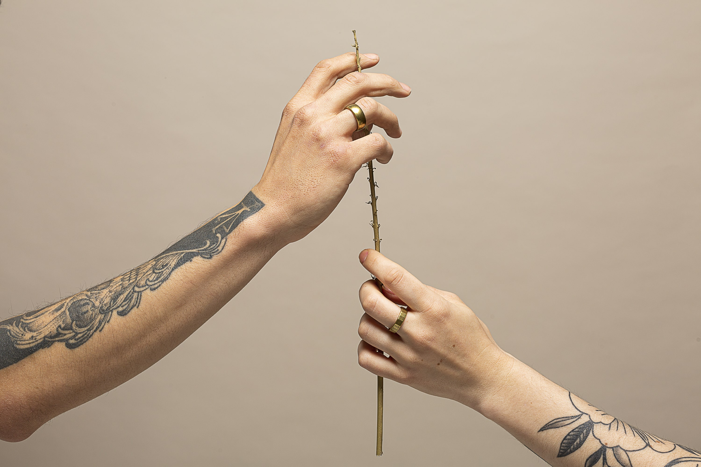
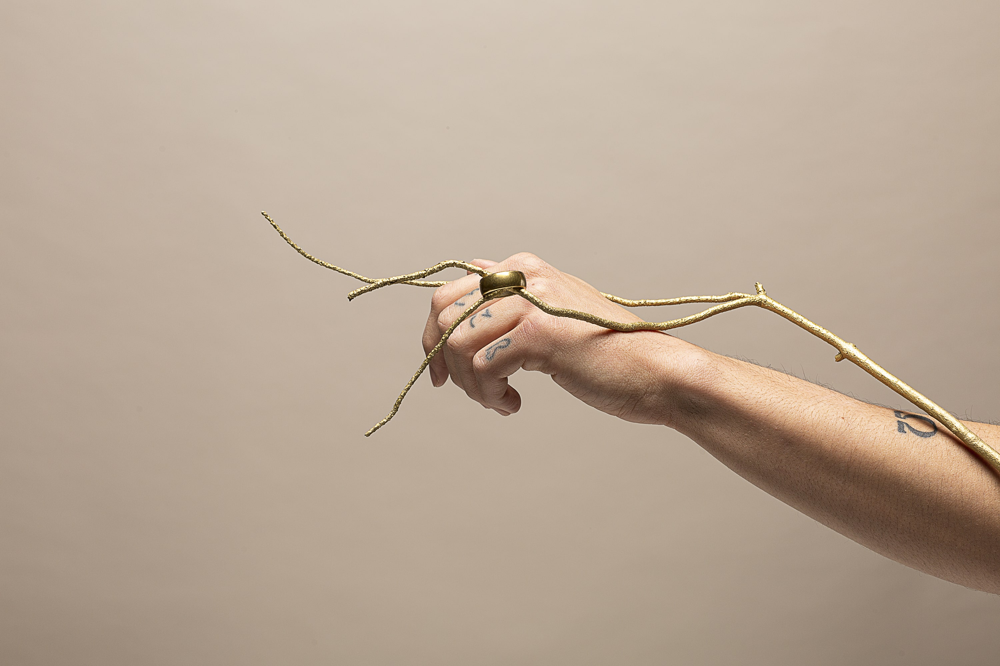
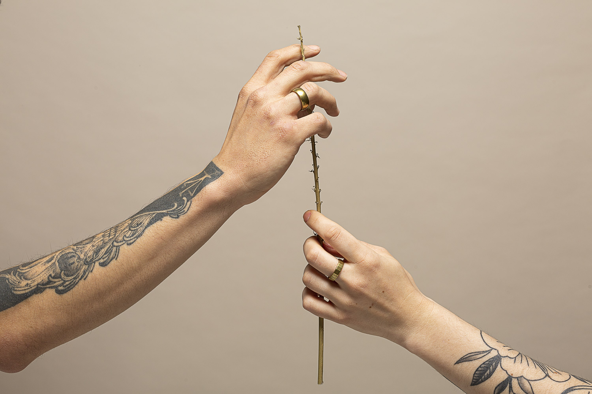
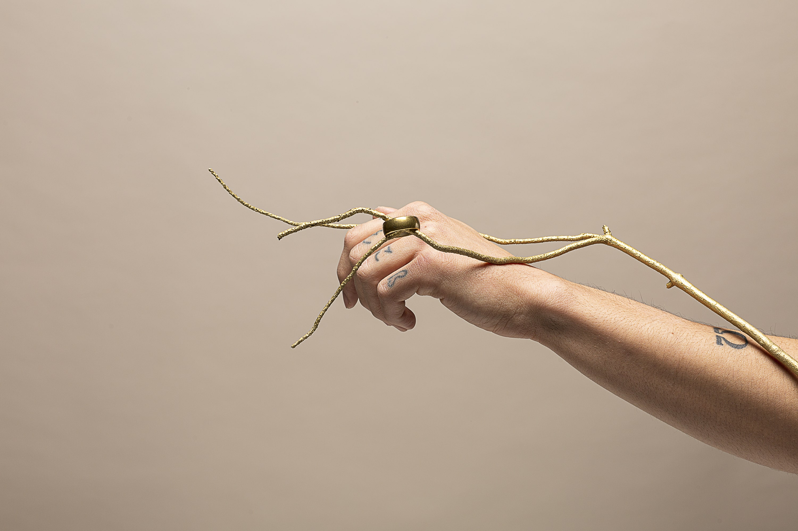
 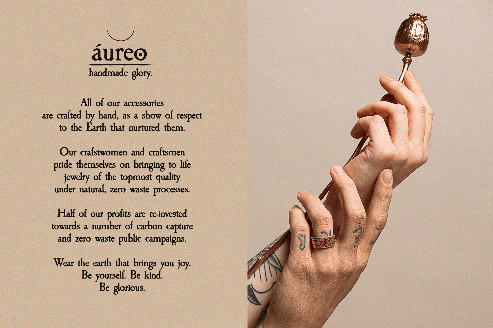
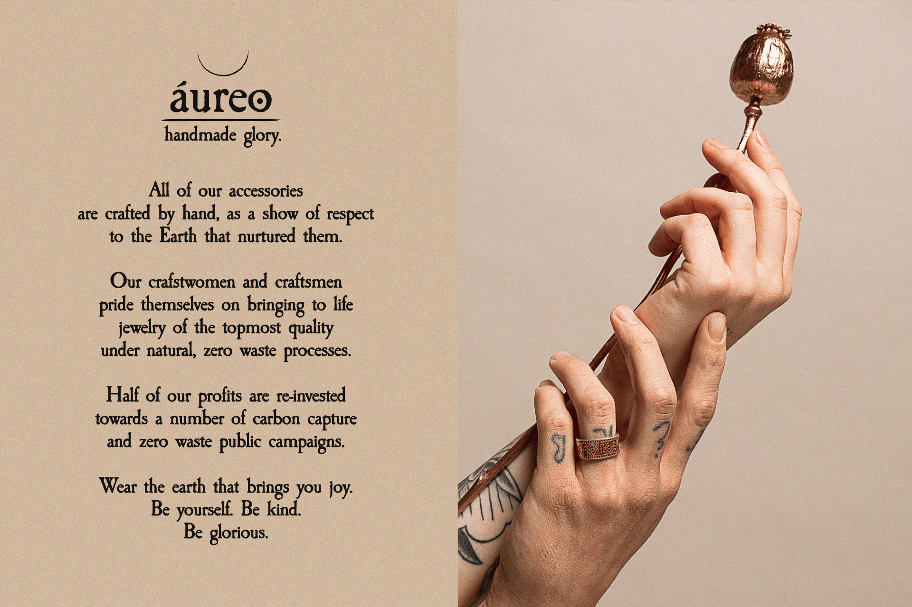


El objetivo principal de este proyecto fue dirigir una sesión de fotografía de producto, y aprovechar las fotografías resultantes para diseñar la identidad de una marca acorde.
Revertiendo el proceso habitual, primero definí el corazón de la identidad (bisutería responsable y natural) y luego expandí ese concepto a través de la fotografía y el arte (naturalezas pintadas en colores metálicos).
Finalmente expandí este concepto en una identidad propia, con elementos tipográficos y y visuales que apoyasen los valores únicos de la marca.
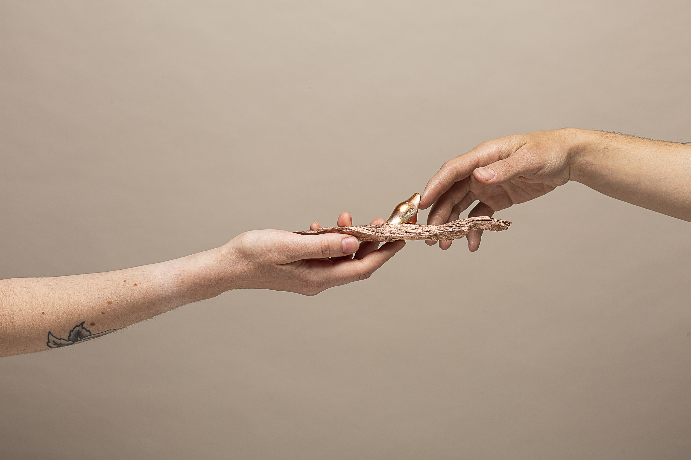
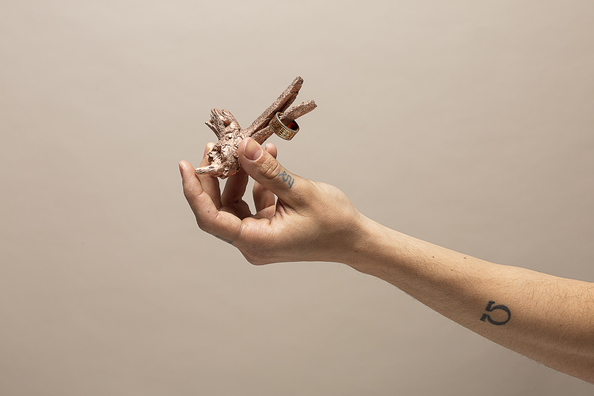
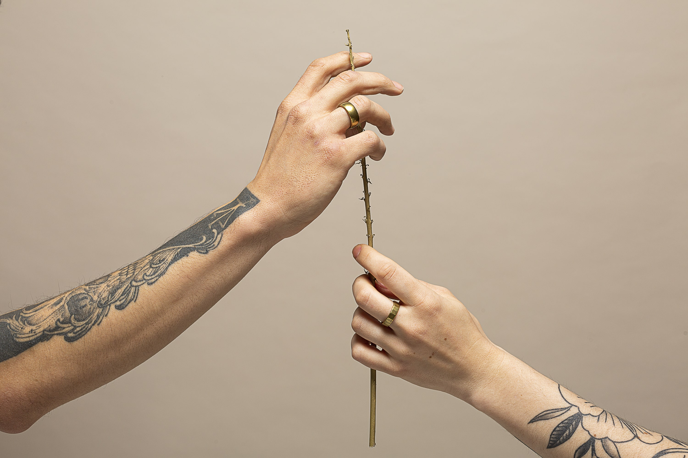
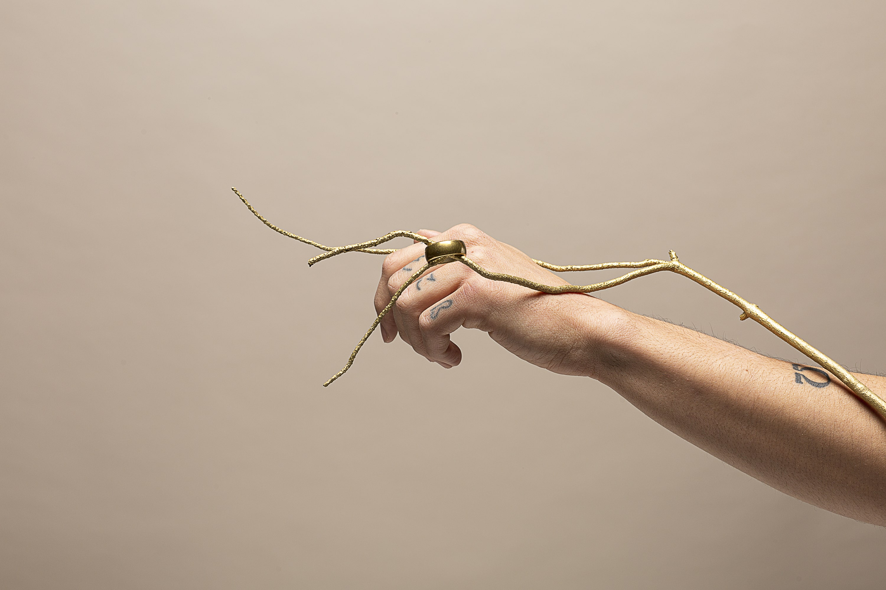
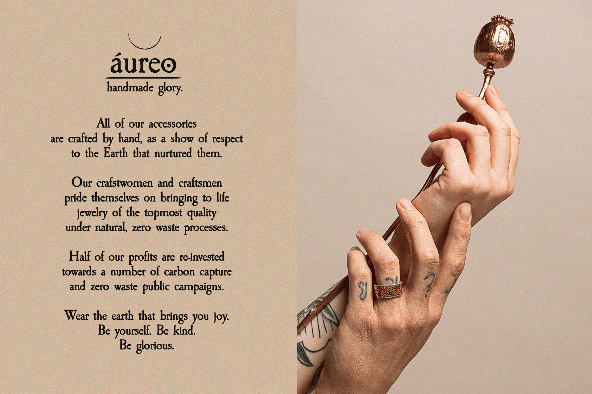